Zdroje informací
- Zápisky z přednášek, Libor Škarvada, Václav Brožek
- Úvod do paradigmat programování, 1994, Univerzita Palackého v Olomouci Katedra Informatiky, David Skoupil
- Úvod do paradigmat programování, 2007, Univerzita Palackého v Olomouci Katedra Informatiky, David Skoupil
- PB006-pb006-zkouska-predtermin-18-12-201, 26.12.2012, fi.muny.cz
- PB006-pb006-vypisky-ze-slidu.pdf, 26.12.2012, fi.muny.cz
- prehled_jazyku.doc, fi.muny.cz
Disclaimer
Nic na tomto webu o sobě netvrdí, že je to pravda.
Testováním lze dosáhnout korektnosti programu pouze tehdy, pokud se zaměříme na jeho vnitřní strukturu.
E. W. Dijkstra
Vnější faktory kvality programu
- Správnost - chopnost programů přesně vykonávat svou úlohu tak, jak je definována v požadavcích zadavatele.
- Robustnost - schopnost programů fungovat i v abnormálních podmínkách. Princip graceful degradation
- Rozšiřitelnost - snadné přizpůsobení novým podmínkám
- Rychlost
- Efektivnost
- Kompatibilita
- Univerzálnost
Pascal
Pascal je ve své původní formě čistým procedurálním, imperativním jazykem, obsahující skupinu řídicích konstrukcí jako je for, while, if, then, else, převzaté z ALGOLu.
Dovoluje kontextově nezávislé přetížení.
Blokový (v jeho čisté formě), modulární jazyk.
Fortran (FORmula TRANslation)
Jazyk pro překlad matematických výrazů
Před interpretací procesorem musel být nejprve přeložen
Haskell
Haskell je standardizovaný funkcionální, modulární programovací jazyk používající líné vyhodnocování. Jazyk se rychle vyvíjí, především díky svým implementacím Hugs a GHC.
Dodržuje referenční transparentnost, přísné typování proměnný.
Je parametricky polymorfní.
Dovoluje kontextově nezávislé přetížení.
C++
C++ je objektově orientovaný programovací jazyk, vyvinutý v Bellových laboratořích AT&T rozšířením jazyka C. C++ podporuje několik programovacích stylů (paradigmat) jako je procedurální programování, objektově orientované programování a generické programování, není tedy jazykem čistě objektovým. V současné době patří C++ mezi nejrozšířenější programovací jazyky.
Prolog
Prolog je logický, netypový programovací jazyk. Patří mezi deklarativní programovací jazyky, ve kterých programátor popisuje pouze cíl výpočtu, přičemž přesný postup, jakým se k výsledku program dostane, je ponechán na libovůli systému. Prolog se snaží o pokud možno abstraktní vyjádření faktů a logických vztahů mezi nimi s potlačením imperativní složky. Prolog je založen na predikátové logice prvního řádu. Základními využívanými přístupy jsou unifikace, rekurze a backtracking.
Jde o nejvíce rozšířený logický jazyk.
Má plochou strukturu a viditelnost, tzn. že všechny predikáty jsou globální a všechny proměnné jsou lokální (v klauzuli).
Eiffel
Eiffel je čistě objektově orientovaný programovací jazyk. Je to jazyk typovaný.
Mercury
Merkury je multiparadigmatický – logicky funkcionální jazyk. Má parametrický polymorfismus.
Scheme
Scheme je multiparadigmatický programovací jazyk. Scheme je jeden ze dvou hlavních dialektů funkcionálního programovacího jazyka Lisp.
Je netypovaný.
Oproti Lispu se Scheme snaží o minimalismus - poskytovat co nejmenší počet základních funkcí, na nichž jsou pak v knihovnách postaveny složitější konstrukce. Díky tomu má dosud poslední reference jazyka jen 50 stran.
Nejznámější implementací je grafický editor GIMP, jehož dodatečné zásuvné moduly a skripty jsou psány v dialektu jazyka Scheme.
Má striktní vyhodnocování a statickou viditelnost.
Gödel
Gödel je v deklarativní programovací jazyk, který dodržuje logické programovací paradigma. Jedná se o silně typový jazyk, jehož systém je založen na mnohotříděné logice s parametrickým polymorfismem.
Gödel má modulární systém, který podporuje libovolnou přesnost celých čísel, racionálních čísel a čísel s pohyblivou desetinnou čárkou.
Java
Java je objektově orientovaný programovací jazyk.
Je velmi dobře přenositelný (přenositelnost je zajištěna překladem do bytového kódu) a proto je používán pro programy, které mají pracovat na různých systémech. Java bude dále vyvíjena jako open source.
Jde o modulární jazyk.
Erlang
Erlang je funkcionální programovací jazyk. Nyní jako open source.
Je dynamicky typovaný jazyk se striktním vyhodnocováním konstrukce pro podporu paralelního vyhodnocování.
C
C je programovací jazyk, vyvinutý pro potřeby operačního systému Unix. C je nízkoúrovňový, kompilovaný, relativně minimalistický programovací jazyk.
Ukládání dat je v C řešeno třemi základními způsoby: statickou alokací paměti (při překladu), automatickou alokací paměti na zásobníku a dynamickou alokací na haldě (heap) pomocí knihovních funkcí. Existují zde ukazatele nezávisle na proměnných, na které odkazují, a je na odpovědnosti programátora, aby neukazovaly na paměť nealokovanou.
Jde o jazyk modulární a imperativní.
ML
ML je funkcionální, typovaný jazyk se striktním vyhodnocováním.
Má parametrický polymorfismus.
Smalltalk
Smalltalk je interpretovaný, dynamicky a striktně typovaný (ve skriptech je ale uvedeno, že je netypovaný), čistě objektový programovací jazyk – prototyp.
LISP
LISP je funkcionální – ne ale čistě, programovací jazyk. Stále se používá v oboru umělá inteligence. Používá ho také například textový editor Emacs či konstrukční program AutoCAD.
Původně navrhnut jako programovací jazyk pro matematické výpočty a byl silně ovlivněn syntaxí Lambda kalkulu.
Lisp nevnímá rozdíl mezi kódem a daty, díky čemuž má jednoduchou syntaxi. Celý program je tak složen z s-výrazů nebo ozávorkovaných seznamů ve tvaru (f a b c), kde na prvním místě je operátor/funkce a na dalších argumenty funkce. Všechny další funkce jazyka mají identickou syntaxi.
Z Lispu jsou odvozeny i další jazyky - například Tcl, Smalltalk nebo Scheme.
Používá dynamickou viditelnost.
Cobol
Jazyk Cobol byl vyvinut společným úsilím výrobců a uživatelů počítačů ve spolupráci s ministerstvem obrany USA.
Zápis jazyka je blízký angličtině.
Jde o imperativní jazyk.
Ruby
Ruby je interpretovaný skriptovací programovací jazyk.
Bytový kód.
Je plně objektově orientovaný vše v Ruby je objekt.
Aspekty programovacího jazyka
- Vztah k výpočtu
- Implementace kompilátoru, interpretu
- Použitelnost jazyka
- Oblast nasazení
- Úspěšnost jazyka
Klasifikace programovacích paradigmat
Paradigma = způsob, jak jsou v programovacím jazyku formulována řešení problémů.
Imperativní (klasické)
Program popsán posloupností příkazů a přesného postupu (algoritmus), jak úlohu řešit.
Existence proměnných (a měnění během výpočtu pomocí operace přiřazení)
Podobnost kuchyňskému receptu, návod k montáži nábytku
ALGOL, Baltik, C, Common Lisp, Fortran, JAVA, PHP, Pascal, QBasic, Visual Basic
Pro funkce je přípustné, aby v průběhu svého vykonávání modifikovaly své vnější prostředí. Vypočtená návratová hodnota tedy není to jediné, co po zbude po jedné aktivaci funkce. Vyvoláme-li tako- vouto funkci vícekrát po sobě, můžeme dostat různé výsledky.
Procedurální
TODO
Objektově Orientované
Objekt je definován stavem a chováním. Navzájem si posílají zprávy.
Deklarativní
Řešení ve formě výčtu vlastností, které by mělo splňovat. Posloupnost operací, které vedou k nalezení výsledku, není uvedena explicitně v programu.
Funkcionální
Výpočet = vyhodnocení matematických (definičních) formulí, zjednodušování až k výsledku – nerozložitelné normální formě.
Vycházejí z teorie funkcí - lambda-kalkulu.
Funkce nemají žádné vedlejší účinky, tudíž ani nemění stav programu. (neexistují proměnné)
Haskell, LISP, Scheme, FP, Miranda
Používáno pro AI, počítačovou grafiku, výuku a výzkum.
Klasická funkce, typická pro funkcionální programování, je co do cho- vání obdobou funkce matematické. Je-li aktivována, spočte ze seznamu sku- tečných parametrů a dalších proměnných a konstant prostředí výslednou hodnotu a tu vrátí volající funkci. Pro matematickou funkci není přípustné modifikovat jakékoli hodnoty vně funkce. Takovouto funkci můžeme volat libovolně-krát po sobě a dostaneme vždy stejný výsledek.
Logické
Výpočet = formule predikátového počtu.
Použití matematické logiky jako prostředku k programování.
Prolog
Constraint logic programming
TODO
Klasifikace podle typu překladače
Překladač speciální program s účelem transformovat program z jednoho jazyka do druhého.
Kompilované
překladače, které přeloží celý kód ze zdrojové formy do jazyku stroje najednou. Překlad celého kódu tedy předchází jeho spuštění.
Interpretované
překladače, obcházející přímý překlad do jazyka stroje. Zdrojový program je těmito překladači postupně interpretován a cílový program jako celek nevzniká. Překlad tak probíhá vlastně souběžně s během programu. Výhodou tohoto přístupu je, že kód je možno za běhu programu modifikovat. Na druhé straně jsou tyto překladače po- malejší, náročnější na paměť a program není schopen fungovat bez přítomnosti překladače.
Klasifikace podle determinismu
Deterministické
Na stejný vstup (resp. na stejné výchozí podmínky) reaguje vždy stejně (tedy předvídatelně) a v každém jeho kroku je vždy jednoznačně definován i krok následující.
Nedeterministické (= stochastický)
V některých krocích může volit z několika možností dalších kroků. Nedeterministický algoritmus při stejném vstupu může dávat rozdílné výsledky.
Klasifikace podle běhu
Sekvenční
Série za sebou následujících instrukcí. Tyto instrukce jsou prováděny pomocí CPU jednoho počítače.
Paralelní
Úlohy mohou běžet současně.
Erlang, Scala, Go, Clojure
Klasifikace podle struktury programu
Klasifikace podle typového systému
Klasifikace podle oblasti nasazení
Systémové programování
TODO
Struktura a forma jazyka (programu). Definuje klíčová slova, identifikátory, čísla a další programové entity a určuje způsob, jak je lze kombinovat. Popsána formální gramatikou (lexikální, bezkontextová, kontext. omezení). Bývá obvykle popsána ve více úrovních.
A Backus-Naurova forma (BNF)
Formální popis syntaxe
Zopakování gramatik Více v IB102 Automaty a gramatiky
Terminální symboly - vyskytují se v popisovaných výrazech. . 0 1 2 3 4 5 6 7 8 9
Neterminální symboly - označují proměnné/abstrakce/symbolické konstrukce, které se v popisovaných výrazech nebudou vyskytovat. Slouží pouze k odvozování správných řetězců terminálních symbolů⟨real-number⟩ ⟨digit-sequence⟩ ⟨digit⟩
Reálná čísla
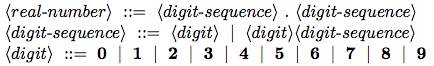
1) Číslice je 0 nebo 1 nebo 2 nebo ... nebo 9. Nic jiného není číslice.
2) Sekvence čísel je číslice nebo číslice následovaná sekvencí číslic. Nic jiného není sekvence čísel.
3) Reálné číslo je sekvence číslic následovaná tečkou a další sekvencí číslic. Nic jiného není reálné číslo.
Syntax úplného jména souboru v operačním systému MS-DOS
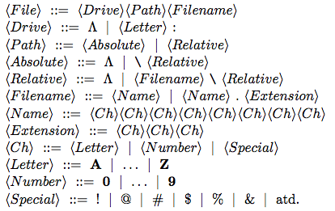
B Rozšířená Backus-Naurova forma (EBNF)
Rozdíly oproti BNF
- Odstraňuje používání špičatých závorek pro neterminály. Zavádí při- tom konvenci, že neterminály jsou psány vždy velkými písmeny, termi- nály vždy malými písmeny a v tisku tučně, speciální terminální znaky jako + − | atd., jsou uzavírány do apostrofů, tj. píšeme ‘+’ ‘−’ ‘|’.
- Umožňuje používat kulatých závorek pro shromažďování výrazů.
- Zavádí symbol složených závorek {expr} pro žádné, jedno nebo více opakování výrazu expr.
- Zavádí symbol hranatých závorek [expr] pro nepovinné konstrukce.
Jakýkoli výraz popsaný EBNF lze převést na ekvivalentní výraz v BNF
Reálná čísla
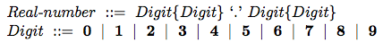
Postup
- Pro každý neterminál existuje jeden diagram, název neterminálu je uveden v levé části diagramu.
- Každé pravidlo BNF s daným neterminálem na levé straně generuje jednu cestu v diagramu
- Terminály jsou psány v kroužcích, neterminály ve čtverečcích
- Možnost opakování je v diagramu znázorněna smyčkou
Klasifikace syntaxe podle účelu
Konkrétní
Definuje vlastní syntax.
Obsahuje dostatečně mnoho terminálů, které zjednodušují a zjednoznačňují syntaktickou analýzu i čitelnost programu


Abstraktní
popisuje strukturu
je nezávislá na konkrétní reprezentaci
obsahuje především neterminály
terminály slouží pouze jako diskriminátory odvozovacích pravidel
vhodná pro formální práci s jazykovými termy, např. pro definici denotační sémantiky


Klasifikace podle toho co popisuje
Lexikální atom = celek zpracování jazyku, vznikne tokenizací na atomické části
Lexikální syntax (mikrosyntax)
Popisuje lexikální strukturu jazyka. Slouží k vymezení lexika – množiny lexikálních atomů neboli lexémů. Bývá popsána regulární gramatikou nebo jednoduchou bezkontextovou gramatikou. Terminály gramatiky jsou znaky. Vlastní program je pak definován jen jako posloupnost lexikálních atomů.
Přirovnání - morfologii v přirozeném jazyce – tvoří jeho slovník.
Lexikální syntax nejen vymezuje lexémy, ale i způsob, jak je rozpoznat ve vstupním proudu znaků. Ve většině jazyků musí být některé dvojice sousedních lexémů odděleny tzv. bílým místem. Proto je další součástí lexikální syntaxe i syntax tzv. bílého místa a komentářů .
Důsledek: V jazycích se zanořovanými komentáři nestačí pro popis mikrosyntaxe regulární gramatika.
Přístupy k bílým znakům coby oddělovačům lexémů
- Bílé místo nehraje žádnou roli [Fortran, Cobol]. Neostrá hranice mezi lexikální a syntaktickou analýzou, víceméně ad hoc.
- Hranice mezi lexémy je často zřejmá z jejich lexikální syntaxe; pokud ne, jsou lexémy jsou odděleny aspoň jedním bílým znakem nebo komentářem [většina jazyků].
- Jazyky s liberální lexikální syntaxí jmen tedy častěji vyžadují (aspoň jednu) mezeru mezi lexémy [Agda].
- Šířka bílého místa hraje roli na začátcích řádků, je tedy významná velikost odsazení [Iswim, Python, Haskell].
- Šířka bílého místa kdekoliv v textu je významná [„dvourozmeřné“ jazyky – Epigram].
Lexikální syntax komentářů
- Komentáře v závorkách
- Komentáře řádkové
- Komentáře autodokumentační - za hlavičkami funkcí tříd, metod,... (Scheme, Smalltalk, Java, eLisp...)
Frázová syntax (makrosyntax)
Popisuje úplnou strukturu programu. Bývá popsána bezkontextovou gramatikou. Terminály gramatiky jsou lexikální atomy.
Přirovnání - větné skladbě přirozeného jazyka – tvoří množinu správně vytvořených vět.
Kontextová omezení
Podmínky vymezující podmnožinu jazyka generovaného gramatikou frázové syntaxe. p Makrosyntax lze přirovnat k větné skladbě přirozeného jazyka – tvoří množinu správně vytvořených vět.
Kontextovým omezením se také ˇríká statická sémantika.
Makrosyntax lze přirovnat k větné skladbě přirozeného jazyka – tvoří množinu správně vytvořených vět.
Makrojazyk
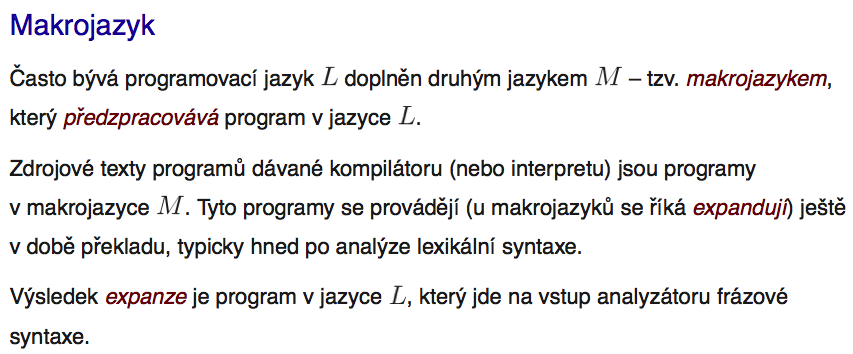
cpp
Makrosyntax lze přirovnat k větné skladbě přirozeného jazyka – tvoří množinu správně vytvořených vět.
Scheme
v programech lze použít makrojazyk, který má tutéž syntax a stejné funkce jako Scheme
Template Haskell
Makrosyntax lze přirovnat k větné skladbě přirozeného jazyka – tvoří množinu správně vytvořených vět.
M4
univerzální makrojazyk, použitelný bud’ samostatně, anebo ve spojení s nějakým programovacím jazykem jako jeho pˇredzpracující makrojazyk
Význam, vztah mezi programem a výpočetním modelem. Přiřazuje významy programům nebo jejich částem.
Logický význam jednotlivých výrazů jazyka. Napr u datumu XX/XX/XX urcuje ktera cast co znamena - DD/MM/YY.
Zadávání sémantiky
- Neformálně – popisem v přirozeném jazyce. To může být nepřesné, často je popis neúplný, nejednoznačný.
- Prohlášením jedné implementace kompilátoru za standard - sice jednoznačné, ale případné chyby v kompilátoru se tak stávají součástí definice jazyka.
- Formálně, pomocí matematického zápisu.
Rozdělení formálních sémantik
A Denotační sémantika
definovaná na programech a jejich komponentách explicitně (jako množina funkcí přiřazujících částem programů význam).
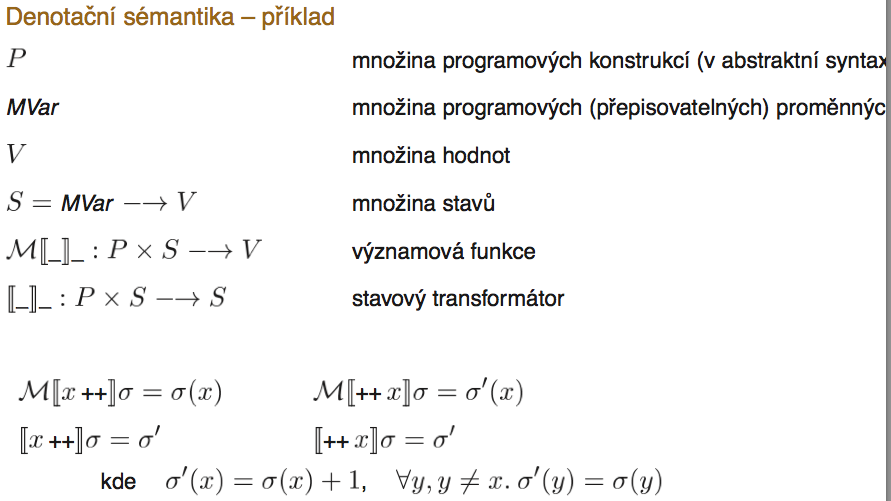

B Axiomatická sémantika
dána jako množina tvrzení (tzv. teorie) o nějakém systému, v němž probíhá výpočet. Používá se zejména u imperativních jazyků, protože tvrzení se vyjadřují o stavech.
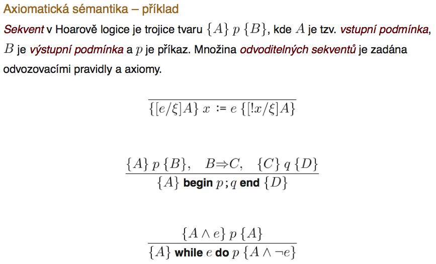
C Operační sémantika
se zavádí množinou pravidel popisujících výpočet abstraktního počítače. Výsledek tohoto výpočtu je významem programu.
Rozlišujeme strukturní (sos) a přirozenou (bos) operační sémantiku.


Determinismus sémantiky
A Nedeterministická sémantika


B Deterministická sémantika


Každá proměnná, konstanta nebo složený výraz může nabývat jen jistých hodnot a lze s nimi provádět pouze jisté operace. ~ typ výrazu = typ nám označuje, jakých hodnot může výraz nabývat a jaké operace na něj mohou být aplikovány.
Pojetí typů
- množiny hodnot
- heterogenní algebry (množiny hodnot spolu s operacemi na nich) (algebraické typy)
- variety heterogenních algeber (množiny s operacemi a axiomy) (ADT)
Typ zásobník nad celými čísly


Klasifikace podle úrovně, na které vznikají
A Úroveň stroje
tyto typy jsou přímo podporované strojem. Bývají to zejména typy Char (Byte), Integer a Real.
B Úroveň jazyka
tyto typy nejsou definované strojem, ale jsou simulovány programovacím jazykem. Algoritmy operací nad těmito typy nejsou integrovány v elektronických obvodech stroje, ale jsou součástí programovacího jazyka. Patří sem často typy jako Boolean, Array nebo Record.
C Úroveň programátora
tyto typy si v daném programovacím jazyku definuje sám programátor. Můžeme sem řadit například typ List nebo Tree, ale i jednoduchý typ jako je Enum.
Klasifikace podle datové struktury
A Základní (primitivní, atomické)
- Logické hodnoty skalární
Boolean
- Znaky (krátké, dlouhé) skalární
Char
- Čísla (celá, desetinná) skalární
Integer, Real
- Adresy skalární
B Složené
Vznikly spojením několika jednoduchých datových typů. Každý strukturovaný datový typ musí definovat operaci selekce (tzv. selektor) pomocí něhož je možno přistupovat k jednotlivým položkám datového typu.
- B1Kartézský součin součinové
- B2Disjunktní sjednocení součtové
- B3Zobrazení (pole, funkce) mocniné
B1 Kartézský součin

Bx Agregáty
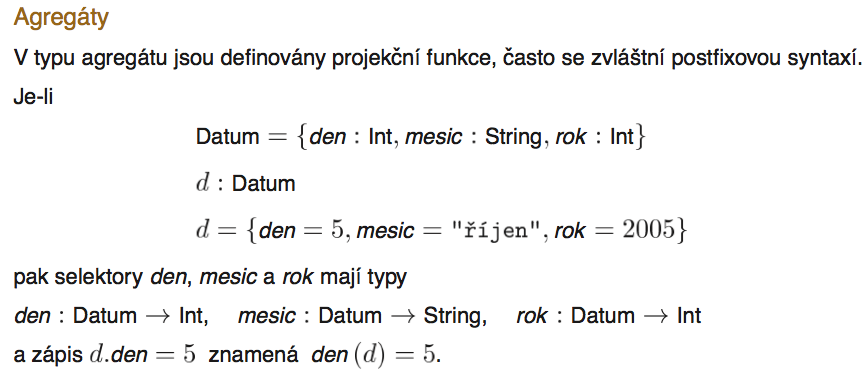
B2 Disjunktní sjednocení

Bx Uniony
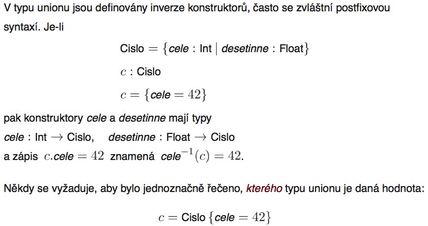


B3 Pole


B3 Funkce
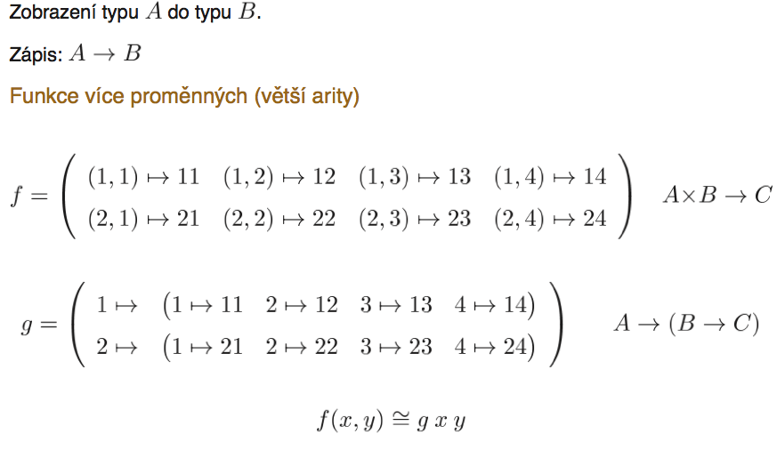
Potenční množiny

Prázdný typ

Jednotkový typ

Výčtové typy

Rekursivní (induktivní) typy


Korekursivní (koinduktivní) typy


Genericita Zaradit
Programovací jazyk podporuje genericitu, pokud umožňuje parametrizovat datové typy.
Parametrizované datové typy se nazývají generické datové typy.
Data = array [0 .. 4] of Real
O skutečné genericitě však většinou hovoříme až tehdy, umožňuje-li jazyk parametrizovat programátorem vytvořené datové typy.
lze uvažovat pouze v systémech s mani- festovanými typy. Systémy s implicitními dynamickými typy jsou generické už svojí povahou
Monomorfismus a polymorfismus
Monomorfismus
monomorfní typy jsou bud’ základní typy, anebo jsou (pomocí typových konstruktorů) složené z monomorfních typů.
Polymorfismus
polymorfní typy zastupují celou množinu monomorfních typů.
Funkci nazveme polymorfní, pokud pracuje stejným způsobem nad různými typy.
problém řešený polymorfními funkcemi není principiálně řešitelný přetížením. Polymorfní funkce pracuje uniformně s li- bovolným typem - a tedy potenciálně s nekonečně mnoha typy.
Podtypový (inklusní) polymorfismus
typovém systému se zavede mezi typy relace a každá hodnota má kromě svého nejmenšího typu i všechny jeho nadtypy.
a každá hodnota má kromě svého nejmenšího typu i všechny jeho nadtypy.
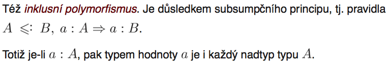
Přetížení
Identifikátor funkce nazveme přetížený (overloaded), pokud reprezentuje více než jednu funkci. Nečiníme zde přitom rozdílu mezi funkcí a operáto- rem, tj. může mít přetížený jak identifikátor funkce, tak operátor.
kontextově závislé přetížení
funkce specifikované přetíženým iden- tifikátorem lze rozlišit pouze pomocí návratové hodnoty funkce
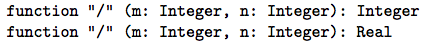
kontextově nezávislé přetížení
funkce specifikované přetíženým identifikátorem lze rozlišit pomocí počtu nebo typu parametrů
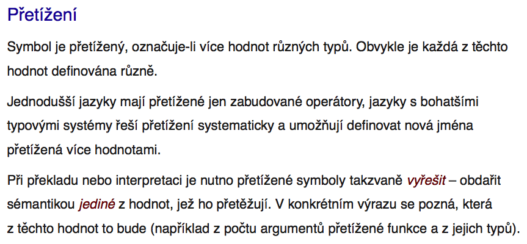

Přetypování (type cast)
Přetypování je explicitní změna typu výrazu, při současném přibližném zachování jeho hodnoty. Pomocí transformačních funkcí.
Koerce (coertion)
Implicitní přetypování 3.14 + 7 na 3.14 + Real(7)
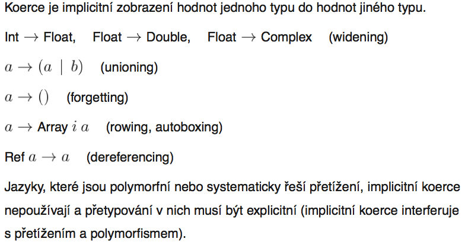
Druhy
Typy v programovacích jazycích slouží ke klasifikaci hodnot. U jazyků s bohatšími typovými systémy druhy slouží ke klasifikaci typů, typových konstruktorů, typových funkcí apod.
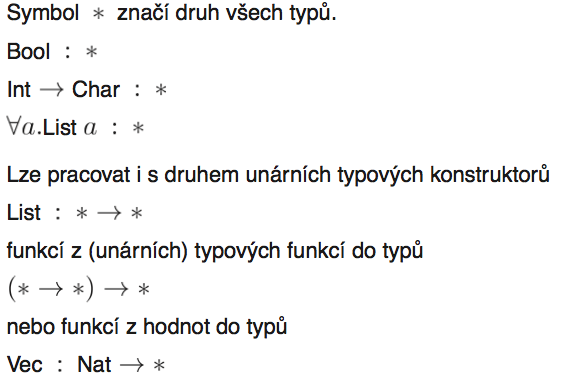
Hodnotově závislé typy
Bohatší typové systémy mohou pracovat s typy závislými na hodnotách. Typové konstruktory mohou být parametrizovány nejen typy, ale i hodnotami.


Funkce
Základní způsob strukturace programu.
Některé jazyky se k funkcním chovají jako ke všem ostatním výrazům – funkce jako parametr jiné funkce, funkci vrátit jako výsledek funkce, funkce konstruující funkce = funkce jsou hodnotami vysokého řádu.
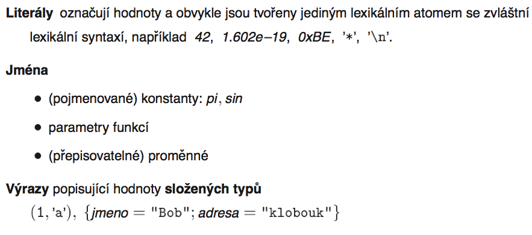

Funkcionální a procedurální abstrakce
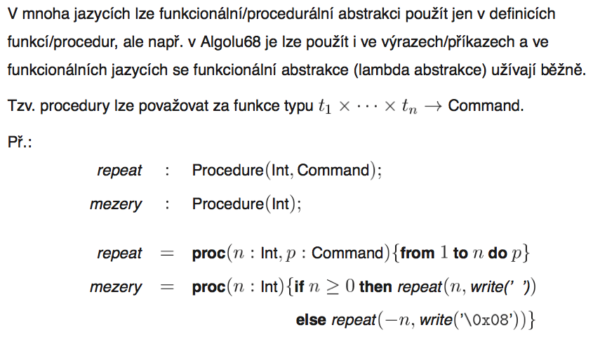
Funkcionální abstrakce
Se provádí nad výrazem tím, že některé jeho (volné) proměnné se prohlásí za parametry výsledné funkce. Počet těchto parametrů určuje tzv. aritu.
Umožňuje-li jazyk pracovat s funkcemi vyšších řádů, lze všechny funkce (procedury) převést na unární.
Procedurální abstrakce

Proměnné
Rozdílný význam v různých paradigmatech:
Funkcionální, logické
čisté proměnné, proměnné v matematickém smyslu. Proměnná označuje hodnotu (třebaže předem neurčenou). Slouží také k označení parametrů funkcí resp. relací.

Imperativní
tzv. přepisovatelné proměnné.
Proměnná označuje pamět’ové místo. Teprve toto pamět’ové místo slouží jako (přechodné) úložiště hodnoty. Hodnota uložená v pamět’ovém místě se může měnit. Tím se mění stav výpočtu. Vevětšiněimperativníchjazyků(Pascal,C,Java,...)sevšakjménemproměnné označuje i hodnota uložená v odpovídajícím pamět’ovém místě (automatické dereferencování).


Příkazy
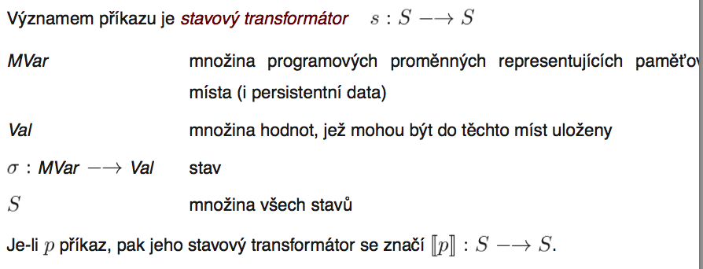


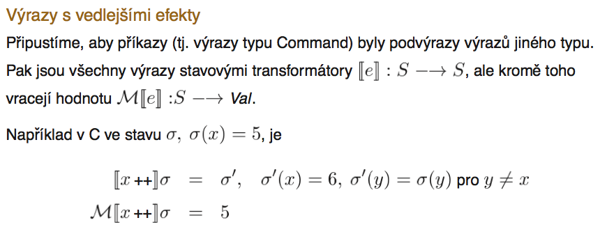
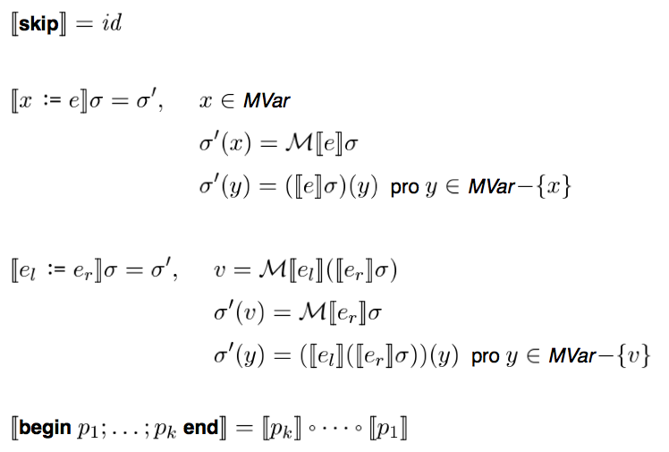
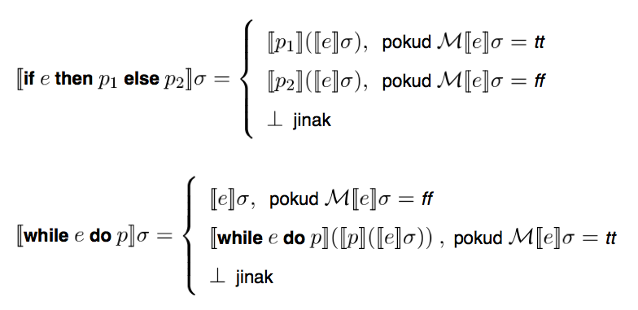
Řadicí příkazy
Skoky
Explicitní přenesení řízení výpočtu do jiné části programu. Obvyklé ve starších jazycích a jazycích nižší úrovně. Většina jazyků klade na použití skoků omezení (například je možný jen skok do stejného nebo nadřazeného bloku).
Přílišné používání skoků vede k nečitelnému kódu a těžko odhalitelným chybám.
Například goto v C
Úniky
Ukončují provádění složeného příkazu, který únikový příkaz obsahuje.
- nejvnitřnější
- n-tý nejvnitřnější
exit n
- nejvnitřnější určitého druhu (cykly, case)
- C:
continue, break
- Prolog:
!
- nejvnitřnější funkcionální či procedurální abstrakce, C:
return
- celý program
halt- Fortran:
stop
- sh:
exit
Výjimky
Mohou být ošetřeny procedurou pro zpracování výjimky (tzv. handler). Výjimek může být více,různýchtypů,aprokaždoumůžebýtdefinovánojinézpracování;různéčásti programu mohou definovat různá zpracování stejné výjimky.
Není-li výjimka zpracována (ošetřena), je šířena (propagována) do příkazu nadřazeného. Některé výjimky jsou zabudované a vyvolávané zabudovanými operacemi, jiné lze
uživatelsky definovat a vyvolat zvláštním příkazem (ML: raise, Java: throw).
Oblast zpracování (scope) výjimky je vymezena programovým blokem nebo zvláštní
syntaxí (try. . . end).
Volání funkcí (= předávání parametrů)
Předávání parametrů
proces navázaní skutečných parametrů na formální parametry funkce.
volání funkce (procedury)
aplikace funkce (procedury) na argumenty
Přiřazování hodnot na místa v paměti
L-value - místo v paměti, do kterého chceme zapisovat.
R-value - hodnota, která je v paměti uložena.
Definice funkce
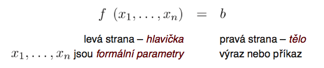
Aplikace (volání) funkce
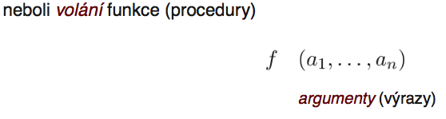
Způsoby předávání parametrů
1. Volání hodnotou (Call by value)
striktní vyhodnocení
C, Lisp
Postupně jsou vyhodnoceny všechny aktuální parametry. Výsledné hodnoty jsou přiřazeny dočasným lokálním proměnným, odpovídajícím formálním parametrům funkce. S těmito proměnnými se pracuje jako s libovolnými jinými lokálními proměnými. Po vykonání funkce dočasné proměnné zaniknou. Hodnoty původních vstupních výrazů se nezmění.
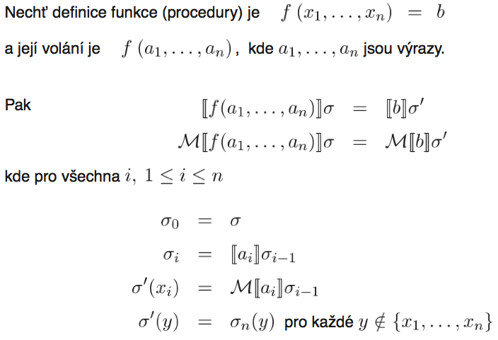
2. Volání odkazem (Call by reference)
PL1, C++
Podobné volání hodnotou, ale skutečné parametry funkcí a procedur smějí být jen (adresovatelná) pamět’ová místa (Ref T) a neprovádí se jejich implicitní dereferencování.
Formální parametry jsou nepřepisovatelné proměnné typu „odkaz na hodnotu“ (Ref T) – např. v Pascalu.
Při simulaci pomocí volání hodnotou (např. v C) mohou být formální parametry přepisovatelné proměnné uchovávající přepisovatelné proměnné (Ref (Ref T)) – dereferencování je pak dvojnásobné.
Nejprve se vyhodnotí aktuální parametry. Předpokládá se přitom, že všechny aktuální parametry mají L-value. Pokud by některý skutečný parametr neměl L-value, je možné jeho R-value přenést do dočasné proměnné a vzít L-value této proměnné. Mnoho jazyků však v této situaci jednoduše vyhlásí chybu. Do funkce pak pošleme adresy (tedy L-values) aktuálních parametrů.
V jazyku je potřeba mít zabudované systémové funkce na získání adresy k proměnné ref(x) a funkci, která k dané adrese vrátí její obsah deref(x)
Manipulace probíhá přímo s obsahy paměťových buněk na zadaných adresách. Funkce může mít vedlejší efekt na své parametry.
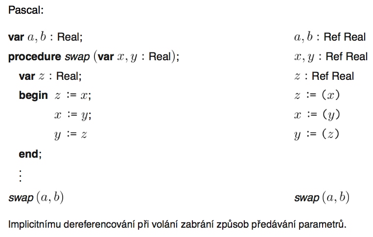
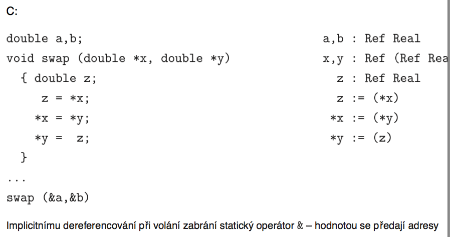
3. Volání hodnotou-výsledkem. (Call by value-result)
Fortran, SR
Nejprve se u všech skutečných parametrů zjistí L-value i R-value. R-value jsou předány do funkce stejně jako u volání hodnotou. L-value všech parametrů jsou uschovány do tabulky. Po vykonání těla funkce, dříve než jsou dočasné proměnné odstraněny ze zásobníku, jsou hod- noty dočasných proměnných nakopírovány zpět do L-value aktuálních parametrů.
Tento způsob předávání parametrů dává v mnoha případech podobné výsledky, jako předávání parametru odkazem.
co-rutina - připouštíme paralelní běh volající a volané funkce ve stejné virtuální paměti.
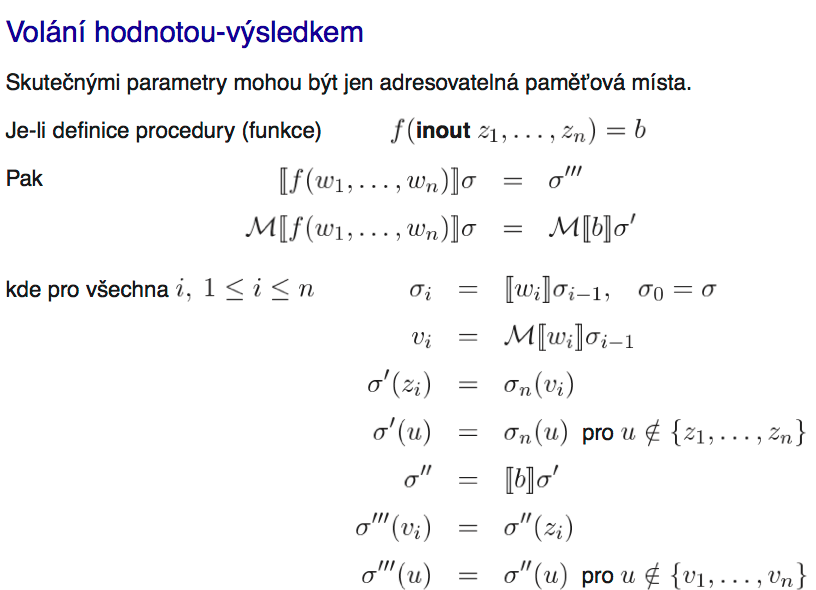
4. Volání jménem (Call by name)
Algol68
normální vyhodnocení
Aktuální parametry se považují za jména a jsou opakovaně vyhodnocovány kdykoli, kdy jsou uvedeny. Tento způsob předávání parametrů je dosti komplikovaný, přináší zvláštní vedlejší efekty a v moderních programovacích jazycích se běžně nepoužívá. Předávání parametru jménem je však co do funkčnosti identické s používáním makra.
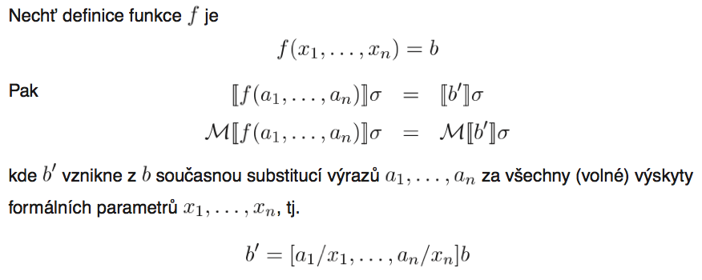
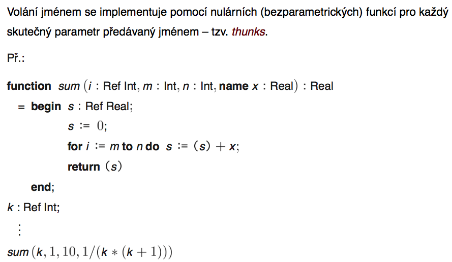
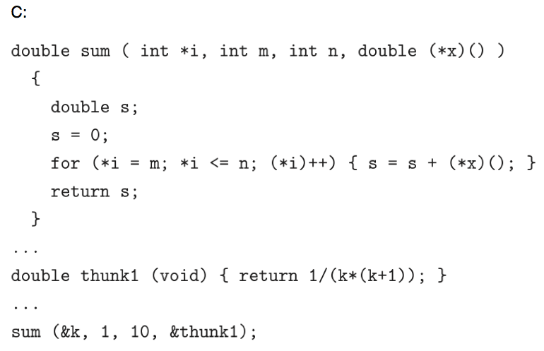
Výsledkem
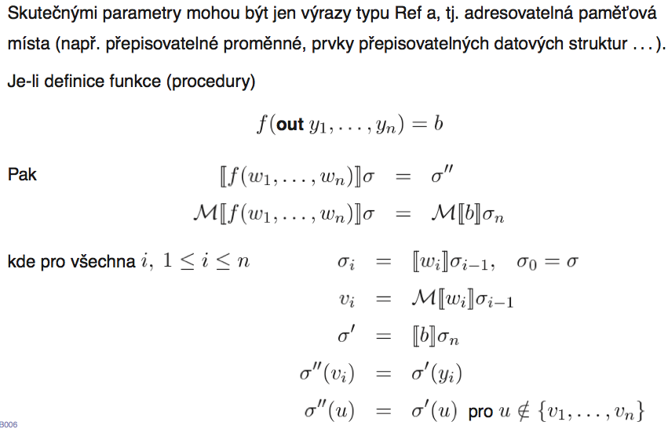
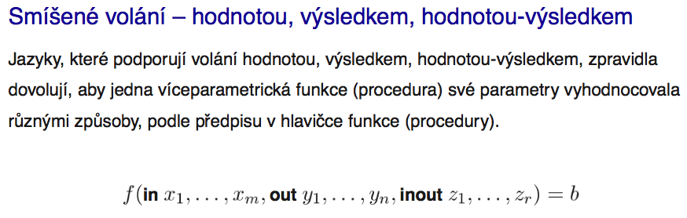

líné vyhodnocení
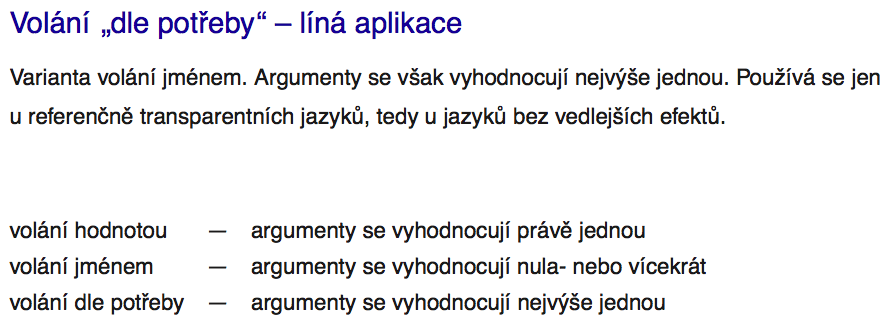
Rozsah platnosti proměnných
jak jazyk definuje termín vně modulu, co je vlastně vnějšek modulu. K tomuto problému existují v zásadě dva přístupy:
Statický (lexikální) rozsah proměnných - statický spoj (static link)
Vnějšek modulu je tak určen strukturou programu, ještě dříve než je program spuštěn na počítači.
ukazatel na aktivační záznam nejbližšího lexikálně nadřazeného bloku.
Dynamický rozsah proměnných - dynamický spoj (dynamic link)
nějšek je tvořen těmi aktivacemi funkcí, ze kterých byl aktivován daný modul. Vnějšek modulu tak není možné určit ze zdrojového programu, je dán až průběhem výpočtu.
ukazatel na předchozí aktivační záznam uložený v zásobníku, tedy ukazatel na aktivační záznam volající funkce.
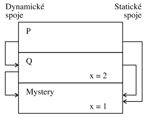
Zjišťování platnosti proměnné
- Je proměnná lokální danému modulu?
- Hledání modulu ve kterém je proměnná nadeklarována (prohledávání zásobníku za pomocí spojů)
Zásobník programu obsahuje návratovou adresu, lokální proměnné, skutečné parametry a dynamický a statický spoj
Paměťové třídy dat
V prostředí souběžného zpracování procesů je rozlišení dat na persistentní a transientní relativní.
Persistentní data
existují nezávisle na výpočtu, jsou spravována souborovým podsystémem operačního systému. Obvykle jsou umístěna na vnějších pamět’ových médiích (soubory, databáze).
Transientní data
existují pouze po dobu výpočtu. Jsou obvykle umístěna v dostupné (procesem adresovatelné) části operační paměti (hodnoty proměnných, parametrů, obsahy přepisovatelných proměnných, ...), ale i vně (dočasné soubory, data na portech, ...).
Statická
prováděná překladačem (statická data, třída static, own).
[instrukce programu, systémová data,statická data, vyrovnávací paměti, ...]
Automatická (zásobníková)
v době výpočtu při zahájení/ukončení aktivace procedury, bloku, aplikace funkce na argumenty (automatická data, třída auto).
[lokální data v blocích, parametry funkcí a procedur, pomocné datové struktury ve funkcích, návratové adresy, . . . ]
Dynamická (haldová)
v době výpočtu, prováděná speciálními procedurami pro alokaci, dealokaci, přesouvání, scelování, . . . (dynamická data, třída dynamic).
- řízená explicitně programem [malloc, free, new, dispose, mark, release]
- spouštěná výhradně „run-time podporou“ výpočtu [garbage collecting, setřásání]
Fáze správy paměti
- alokace (přidělení)
- dealokace (uvolnění)
- obnovení volné paměti může vyžadovat gc
- scelování – změna polohy obsazených a volných bloků
Scelování (spojování sousedních volných bloků)
je snazší, pokud se seznam volných bloků udržuje uspořádaný podle adres
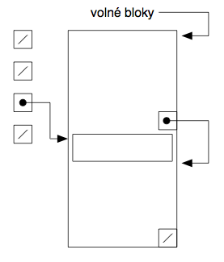
Setřásání (úplné scelování)
způsobí změny ukazatelů
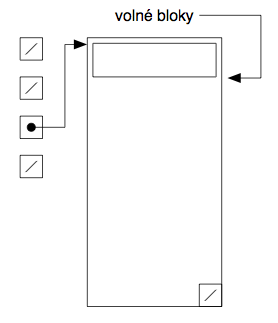
Problémy
- smetí (» garbage collector)
- slepé odkazy
- fragmentace (» částečné scelování)
Správa dynamické paměti
vytvoření seznamu volných bloků, seznamu mimohaldových ukazatelů
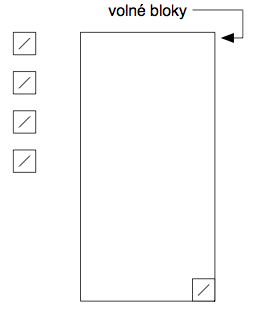
Alokace bloku požadované velikosti
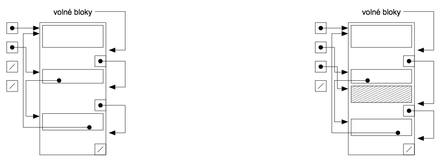
nekorektní – vznik slepého odkazu
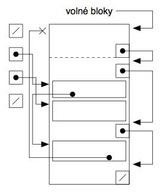
nekorektní – vznik smetí
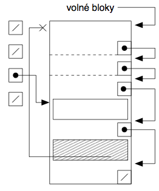
Úklid smetí (garbage collection)
každý alokovaný blok má příznak dostupnosti (1 bit)
všechny příznaky dostupnosti se nastaví na „nedostupné“
postupuje se od známých ukazatelů a všechny navštívené bloky se označí „dostupné“ (při návštěvě bloku již označeného za „dostupný“ se hlouběji nepokračuje)
nakonec se všechny nedostupné bloky zařadí do seznamu volných
Patří mezi deklarativní paradigmata.
Logické programy popisují vztahy mezi hodnotami pomocí tzv. Hornových klausulí. Program se skládá ze seznamu klausulí (teorie) a z formule (cíle, dotazu). Výpočet je hledáním tzv. splňujících substitucí, tj. takových ohodnocení proměnných z cíle, při nichž cíl vyplývá (lze odvodit) z teorie.
Abstraktní syntax prototypového logického jazyka: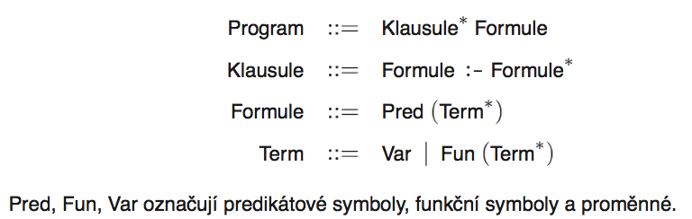
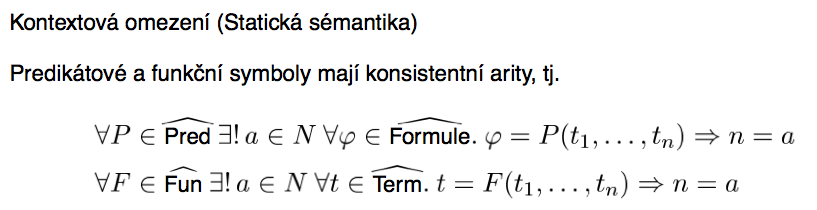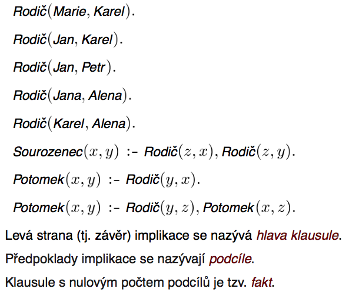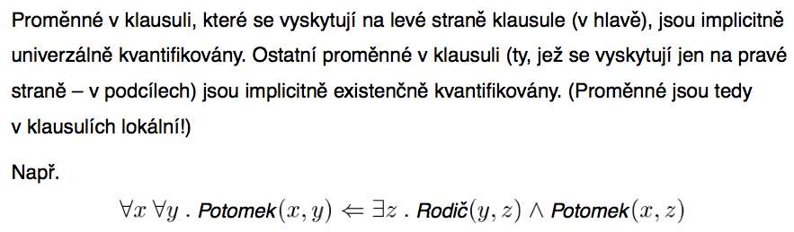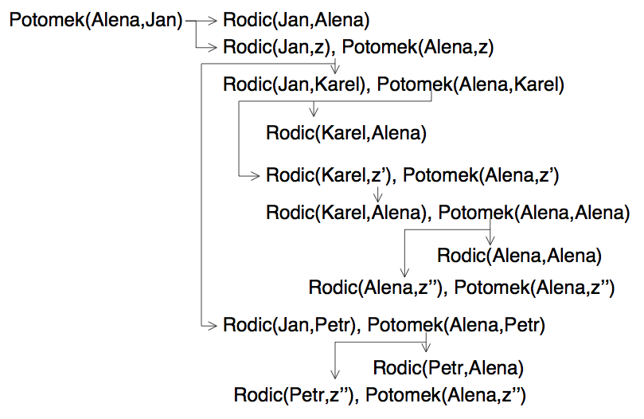
Termy
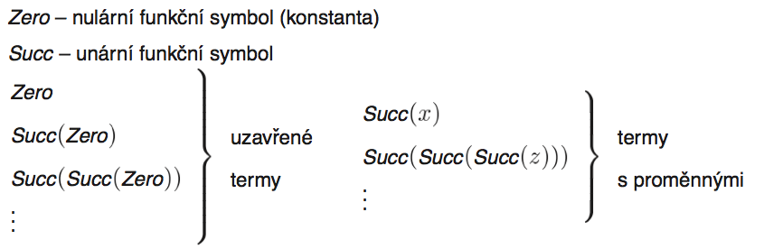
Klausule
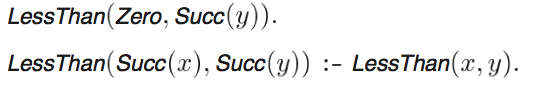
Dotaz
Sémantika logického programu
Substituce
Sémantika
Řízení výpočtu
Logické jazyky
Prolog
Gödel
Mercury
Aplikace logického programování
- zpracování pˇrirozeného jazyka
- expertní systémy
- symbolická manipulace s výrazy, ˇrešení rovnic
- simulace
Výhody
- vyšší úrovenˇ, tj. program je bližší popisu problému než implementaci
- logika programu oddeˇlena od ˇrízení výpocˇtu
- snazší du ̊kazy korektnosti
Nevýhody
- efektivita
- nevýhodné pro aplikace s intenzivním I/O
Patří k deklarativním paradigmatům.
Rysy funkcionálních jazyků
- Nerozlišuje stavy, výpočet je jednostavový. Nemá tedy selektory složek stavu, tj. přepisovatelné proměnné.
- jazyky vycházejí z lambda kalkulu nebo kombinátorového kalkulu, tedy pracují především s funkcemi a funkce jsou hodnotami „první kategorie“.
- Vysoká míra ortogonality.
- bohatý typový systém – parametrický polymorfismus, typové funkce a třídy
- uživatelské typy
- definice podle vzoru
- funkce vyššího řádu, kombinátory
- líné vyhodnocování, nekonečné datové struktury
Sémantika funkcionálního jazyka
Funkcionální jazyky
LISP
(LISt Processing) – John McCarthy, konec 50. let
jednoduchá syntax, stejná pro data i algoritmy – homoikonický jazyk
není čistě funkcionální
netypovaný
dynamická viditelnost
dialekty: AutoLisp, eLisp, . . .
Scheme
netypovaný jazyk vycházející z Lispu, 80. léta
syntax podobná Lispu; statická viditelnost, striktní vyhodnocování, streamy
ML
typovaný jazyk, konec 70. let, Edinburgh
striktní vyhodnocování
dialekty: CaML, OCaML
Erlang
dynamicky typovaný jazyk se striktním vyhodnocováním
konstrukce pro podporu paralelního vyhodnocování
Haskell
čistě funkcionální, modulární, líně vyhodnocovaný
čisté začlenění imperativních konstrukcí do referenčně transparentního jazyka pomocí monadických typů a operací
Multitasking
souběžné zpracování úloh na jednom počítači
úlohy využívají různé prostředky (typicky pomalejší I/O zařízení)
interleaving
víceuživatelský režim
systém správy paměti je přizpůsoben souběžnému zpracování více úloh (stránkování, swapping,…)
Distribuované zpracování
rozdělení úlohy na nezávislé podúlohy, méně komunikace
výpočetní shluky
globálně distribuované úlohy
Mobilní výpočty
stěhování výpočtu po síti
Víceprocesorové počítače
Několikaprocesorové (MIMD)
samostatné procesory
vícejádrové subprocesory sdílející některé prostředky (pamět’ cache)
využití: napˇr. grafické karty
systémy pro simulaci masivního paralelismu
Vícepočítačové systémy
tzv. shluky (clusters) - skupiny počítačů propojené sítí (obvykle lokální a velmi rychlou)
určené pro distribuované výpočty a pro zvýšení spolehlivosti
Interference a nezávislost
Od procesů se obvykle očekává, že budou kooperovat, tedy nemohou být nezávislé. Neřízená (živelná) interference je však nepraktická, protože neomezeně interferující procesy je extrémně těžké programovat, ladit a spravovat. (Může však mít smysl na hardwarové úrovni.) Proto je vhodné interferenci omezit na přesně určená místa výpočtu a oblasti sdílené paměti.
Podmíněná kritická sekce
Semafory
Problémy souběžného zpracování
- Nedeterminismus – při souběžném zpracování v mnohem větší míře než při sekvenčním; cílem je psát programy globálně (vnějšně) deterministické – chyby vzniklé porušením tohoto pravidla se obtížně detekují, protože běhy výpočtu jsou prakticky neopakovatelné.
- Závislost na relativní rychlosti zpracování.
- Zablokování – čekání procesů na sebe navzájem.
- Zmítání – „živá“ varianta zablokování (procesy tráví čas marnými pokusy na odstranění zablokování).
- Strádání – situace, kdy některé procesy „stojí“ (setrvávají ve stejném stavu) a ostatní běží na jejich úkor – je důsledkem tzv. nespravedlivého plánování.
Zablokování (deadlock)
je stav, kdy množina procesů čeká na přístup k prostředkům a z důvodu vzájemně nekompatibilních požadavků tento přístup nezíská.
„Živá“ varianta deadlocku – livelock (zmítání). Algoritmus plánování přidělování prostředků procesům je spravedlivý, když zaručuje, že každý proces bude čekat na přístup k požadovaným prostředkům nejvýše konečně dlouho.
K zablokování může dojít, právě když platí současně následující podmínky:
- Vzájemné vyloučení – každý prostředek je přidělen nejvýše jednomu procesu.
- „Wait & hold“ – procesy čekající na prostředky si drží jiné dříve přidělené prostředky.
- Cyklické čekání – v bipartitním grafu procesů a prostředků s hranami „chce“ a „je přidělen“ je cyklus.
Řešení zablokování
- Vyhýbání se zablokování – sledováním, zda se výpočet nepřiblížil nebezpečné oblasti. Drahé.
- Prevence zrušením podmínky „wait & hold“ – vyžaduje se, aby každý proces požádal naráz o všechny prostředky, které bude potřebovat. Plýtvání prostředky.
- Prevencezrušenímpodmínkycyklickéhočekání–naprostředcíchsezavede lineární uspořádání a vyžaduje se, aby byly požadovány jen v tomto pořadí. Elegantní, ale někdy může být omezující.
- Detekce a zotavení – rozpoznání, že došlo k deadlocku, a zabití procesu.
- Nerˇešení – ignorování deadlocku. Zabití procesů je ponecháno na vlastníkovi či vlastnících. Je-li zablokování v OS, zmrznutí a reboot.
Viditelnost jazykových entit
Jazyková entita = cokoliv, co může být pojmenované
Statická (Lexikální)
Nejčastější
Pro každou definici jazykové entity (konstanty, proměnné, typu, ...)je tzv. statickou sémantikou určena oblast platnosti definice.
eg. Pascal, Modula, Algol68
Stromová struktura - implicitně, viditelné vše od rodičů.
Globální a lokální entity
V potomcích můžeme deklarací proměnné překrýt tu rodičovskou
eg. C, Modula
Moduly se vzájemně nevnořují, ale mohou být tvořeny blokem.
Třídy viditelnosti: public / private.
use A, B(t) – M používá všechny proměnné z A, pouze proměnnou t z B
Java
z hlediska viditelnosti podobné modulárním, rozlišují třídy a objekty.
Objekt
je modul se skrytými (privátními) přepisovatelnými proměnnými (tzv. atributy) a s veřejnými operacemi (tzv. metodami) nad těmito proměnnými.
Třída
(„generický objekt“) popisuje typ objektu.
Vlastní objekty se nazývaji instance třídy a vytvářejí se zvlášt’:
- Deklarací - statické objekty
- Příkazem - dynamické objekty
Definice třídou exportovaných atributů a metod je součástí
- definice třídy – statické metody, případně atributy
- deklarace instance – atributy (někdy i metody)
Dědičnost
mezi třídami je zavedena relace podtříd
Vlastnosti OO jazyků
- Třídy a objekty (statické nebo dynamické).
- Dědičnost a inkluzní polymorfismus
- Viditelnost omezená na objekty a řízená pomocí public / private (příp. protected).
- V (dynamických) objektech mohou být atributy i metody statické / dynamické
Příklady
- Simula67 považována za nejstarší jazyk, vněmž se poprvé objevily některé principy OO programování
- Smalltalk první čistě objektový OO jazyk; netypovaný
- Eiffel čistě objektový, typovaný
- C++ původně jen rozšíření C pomocí makrojazyka cpp, není čistě objektové
- Java spolu s C++ nejrozšířenější, není čistě objektová (má i primitivní typy, které nejsou třídami), ale má čistší design než C++
- Python, Ruby interpretovaný bytový kód
- Ada staticky typovaná, vznikla na zakázku MO USA na konci 70. let; pojmenovaná po Lady Lovelace
- OCaML objektová verze funkcionálního jazyka ML
Toy Languages
Nepoužitelné pro „programování ve velkém“.
Dynamická
Viditelnost jazykových entit závisí na momentálně aktivních programových jednotkách (blocích, funkcích, procedurách, ...) v době běhu.
Téměř nepoužívaná (Lisp, Snobol, APL).
- Teorie: Frázová syntax se používá na definování komentářů.
- NE, frázová syntax popisuje úplnou strukturu programu (tvoří množinu správně vytvořených vět)
- Teorie: Mějme a : A, podle pravidla subsumpce je a i typem všech PODtypů A?
- Scheme je logický jazyk.
- NE, Scheme je funkcionální, netypovaný jazyk se statickou viditelností a striktní vyhodnocováním.
- Automatická data jsou ukládána na zásobníku.
- ANO, Automatická data jsou typem transientních dat (exitují jen po dobu výpočtu), které jsou uložena v zásobníku.
- Máme funkci g, která je typu g : A x B -> A; a g : A x B -> B. Dále někde v kódu máme výraz g(g(x,y),g(u,z)), co platí?
- Nerozhodnutelné v jakémkoliv kontextu.
- Kontextově nezávislé přetížení...
- Kontextově závislé přetížení a v tomto případě LZE rozhodnout. [řešení]
- Kontextově závisle přetížení a v tomto případě NElze rozhodnout.
-
Do globalnej premmenej "a" (typu int) je na pociatku vlozena hodnota "n". Dalej mame nasledujucu funkciu/proceduru P:
P(ref int x, inout int y) {
while (x>0) {
x = x-1;
y = x + y;
}
}
Ta je zavolana nasledovne: P(a,a); Aka hodnota bude v premmenej "a" po skonecni procedury?
- n
- (n*(n+1))/2 [řešení]
- 0
- 2^n, nebo tak neco
- jina
-
UnitT -> TriT, kolko je spojitych funkcii a kolko z nich je maximalnych?
UnitT je klasicky 2 prvkovy ("()" a "T"), TriT je typ zadefinovany ako obsahujuci nedefinitko
a potom dalsie 3 prvky A,B,C, ktore su v TriT maximalne (t.j. A,B,C su navzajom neporovnatelne,
ale ktorykolvek z nich je vacsi ako T)). Dohromady teda TriT obsahuje 4 prvky.
- ...
- 7 funkcii, 3 maximalne [řešení]
- ...
-
Příklad v prologu. Máme zadánu pomocnou funkci Add(m, n, p), definovanou (aspoň doufám):
Add(Zero, n, n).
Add(Succ(m), n, Succ(p)) :- Add(m, n, p).
Definujte funkci Mul(m,n,p), která vrátí yes, pokud je p součinem m a n.
- (Prostě p=m*n).